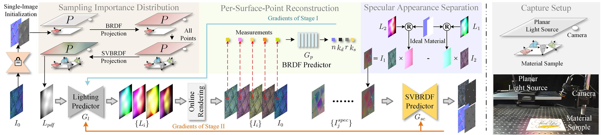
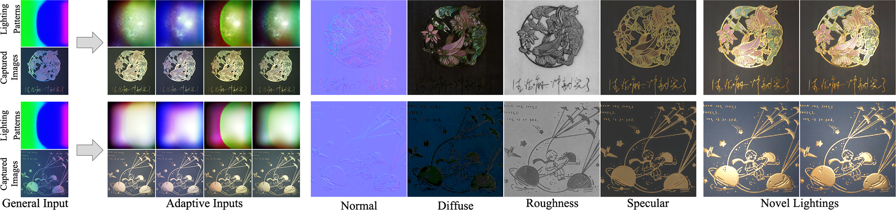

Reflectance acquisition from sparse images has been a long-standing problem in computer graphics. Previous works have addressed this by introducing either material-related priors or illumination multiplexing with a general sampling strategy. However, fixed lighting patterns in multiplexing can lead to redundant sampling and entangled observations, making it necessary to adaptively capture salient reflectance responses in each shot based on material behavior. In this paper, we propose combining adaptive sampling with illumination multiplexing for SVBRDF reconstruction from sparse images lit by a planar light source. Central to our method is the modeling of a sampling importance distribution on lighting surface, guided by the statistical nature of microfacet theory. Based on this sampling structure, our framework jointly trains networks to learn an adaptive sampling strategy in the lighting domain, and furthermore, approximately separates pure specular-related information from observations to reduce ambiguities in reconstruction. We validate our approach through experiments and comparisons with previous works on both synthetic and real materials.

Overview of our framework (left) and capture setup (right). The framework consists of three auxiliary modules (top left) and a main pipeline (bottom left). Specifically, given the first captured image, we initialize material behaviors using existing single-image methods. Then, a sampling importance distribution within the lighting rectangle is constructed based on NDFs. Then, adaptive lighting patterns are predicted by network Gl for other input images capturing or rendering. During training, the lighting predictor is jointly trained with a BRDF predictor Gp in the first stage and then refined by the joint training with the SVBRDF predictor Gsc in the second stage. We also explicitly separate specular-related appearance to aid reconstruction. Once trained, the SVBRDF maps can be obtained using lighting predictor for capture and the SVBRDF predictor for reconstruction.

Given an image captured under a general pattern, our method predicts adaptive lighting patterns to capture the salient part of reflectance responses. As illustrated, our predicted patterns not only consider previous sampling of the general pattern, but also adapt to material behaviors to reduce redundant sampling. We show material maps of two real materials of our method and re-renderings under novel environment and point lighting.
@inproceedings{Zhang2023PlanarLighting,
author={Zhang, Lianghao and Gao, Fangzhou and Wang, Li and Yu, Minjing and Cheng, Jiamin and Zhang, Jiawan},
title = {Deep SVBRDF Estimation from Single Image under Learned Planar Lighting},
doi = {10.1145/3588432.3591559},
booktitle = {ACM SIGGRAPH 2023 Conference Proceedings},
articleno = {48},
numpages = {11},
year = {2023},
series = {SIGGRAPH '23},
}